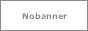

Bookmark
リンクページです。全て別窓表示するように一括指定しています。
嫌な場合はタグを削除してください。
Love Site
サイト名 / 仮想環境を作成するソフト
サイトの説明などなど書く場所
お好きなように使ってください
サイト名 / IEの仮想環境
サイト説明
サイト名 / 上のインストール方法
サイト説明
Friend Site

サイト名 / 管理人
サイト説明
サイト名 / 管理人
サイト説明
Material Site